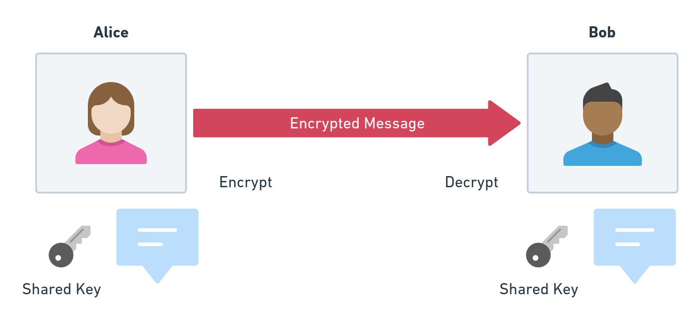
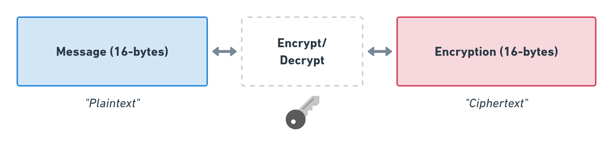

Secrecy
Symmetric Encryption
AES: Advanced Encryption Standard
Rijndael block cipher
- Encoded message
- Key
- Initialisation vector
- Authenticated Associated Data (AAD)
ArrayBuffer
let enc = new TextEncoder()
let plaintext = enc.encode("this is a secret message")
let key = await window.crypto.subtle.generateKey(
{
name: "AES-GCM", // Mode
length: 256 // Key size
},
true, // Allow exporting
["encrypt", "decrypt"] // Allowed usage
)
3. Initialisation Vector
...but first some theory!
Electronic Code Book
Deterministic Encryption
AES(k, "dog") // Fails!
AES(k, "dog0000000000000") = "0b36a49defdf08b5d71e27..."
AES(k, "dog0000000000000") = "0b36a49defdf08b5d71e27..."
Deterministic encryption is not secure!
AES(k, "dan@coderdan.co0") => "86cac65c67488991299d753..."
SELECT email_ct, product_name FROM purchases;
| product | email
|------------|----------------------------------|
| Pizza | 86cac65c67488991299d753f697f11fd |
| Milk | 6ef04978077008442b8378760c92ed49 |
| Chocolate | 86cac65c67488991299d753f697f11fd |

Randomised Encryption
AES(r, k, m) = [r, ct]
AES("041e6ab6031ecb6dc08665f0b072a8b8", k, "dog")
// => "0b36a49defdf08b5d71e27c12949dac7"
AES("c8e799d08724d31e8fe86dce93fc69c5", k, "dog")
// => "78032585e79c4465221fd2176dae21ba"
(Not showing padding for readability)
Nonce: Number used once!
r is called the "nonce" or the "initialisation vector" (IV)
It must never be repeated
Choosing a nonce
Option 1: using a counter
let buf = new ArrayBuffer(8)
let iv = new BigUint64Array(buf)
iv.set([1n]) // Increment every call to encrypt
Warning!
Never reuse an IV.
Option 2: Strong Random Number
let iv = window.crypto.getRandomValues(new Uint8Array(16))
n IVs?
\[\begin{aligned}
Pr[collision] = 1 - e^{n^2/(2^{b+1} - 1)}
\end{aligned} \]
Where b is the IV size in bits.
A 32-bit (4-byte) IV?
After 100,000 encryptions
\[\begin{aligned} 1-e^{-100000^2/(2^{33}-1)} \end{aligned} \]...68.5%!
A 64-bit (8-byte) IV?
After 100,000 encryptions
\[\begin{aligned} 1-e^{-100000^2/(2^{65}-1)} \end{aligned} \]2.7x10^-10 (or less than 1 in a billion)!
After 1,000,000,000 encryptions
\[\begin{aligned} 1-e^{-100000^2/(2^{65}-1)} \end{aligned} \]2.7%
If in doubt just use 128-bits
// 16-bytes = 128 bits
let iv = window.crypto.getRandomValues(new Uint8Array(16))
Putting it all together
let ciphertext = await crypto.subtle.encrypt(
{
name: "AES-GCM",
iv: iv
},
key,
plaintext
)